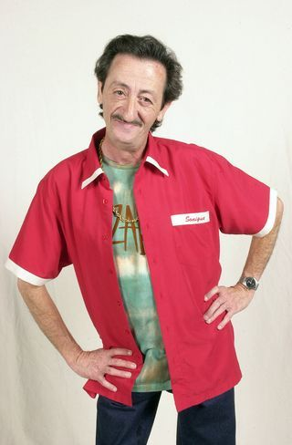

Nombre: Mariano Delgado
Interpretado por: Eduardo Gómez
Primera aparición: Érase una mudanza
Última aparición: Érase un adiós
Oficio: Vendedor de libros y ex-portero
Mariano es uno de los personajes más importantes y también uno de los más graciosos. Siempre esta con su hijo, Emilio, a veces ayudándole, otras igual... Fastidiándole la vida.
Podemos ver que él mismo es tan único, que se inventa una orientación sexual para el solo, la "metrosexualidad". Le podemos ver mencionarla en varias ocasiones y vistiendo ropa muy metrosexual.